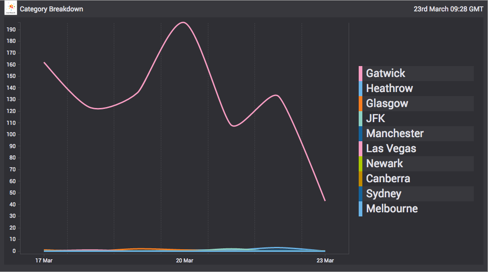
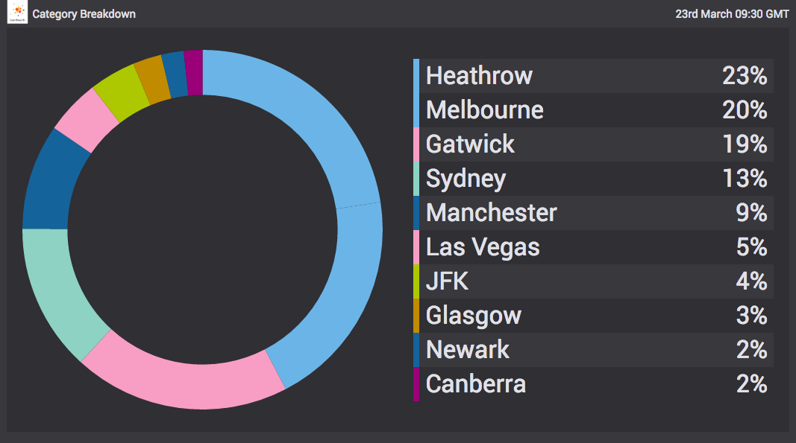
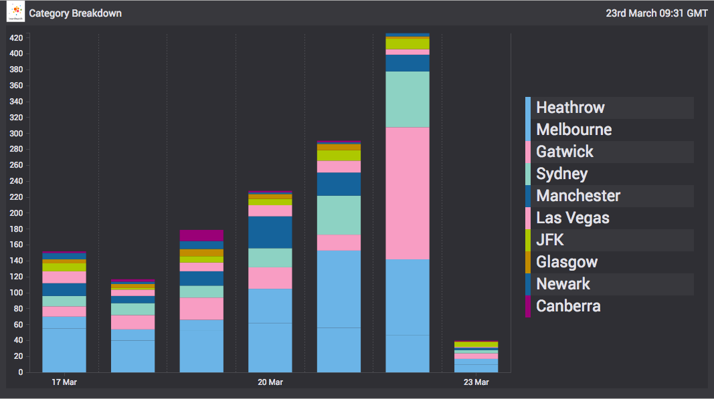

destination-chart
A Vizia Tapir wrapped C3 chart able to render and update itself using streaming data
  
Options
ChartDestination is constructed with an options object with the following properties:
destTarget-String- selector for the destination DOM nodeonDataMethod-String | undefined- defaults to'flow'- when set to'flow'data is fluidly appended to the chart over time and when set to'load'data is loaded into the chart in one goflowLimit-Number | undefined- defaults to10- the max number of points in the chart domain that will be displayedshowAverageLines-Boolean | undefined- defaults tofalse- if set to true average lines will be displayed on the chartchart-Object | undefined- defaults to{}- can be used to set and override config passed into the c3 generate call which is used internallyinterpolationType-String | undefined- if set (e.g. to'monotone') then c3's default interpolation type is overridden (more info here)
Source
The chart expects an object stream. The format of emitted data events depends on the chart.data.type specified at construction time (defaults to 'spline'). The different types are documented here
Examples
See the demo directory in the root of this repo for examples of what can be achieved with this destination